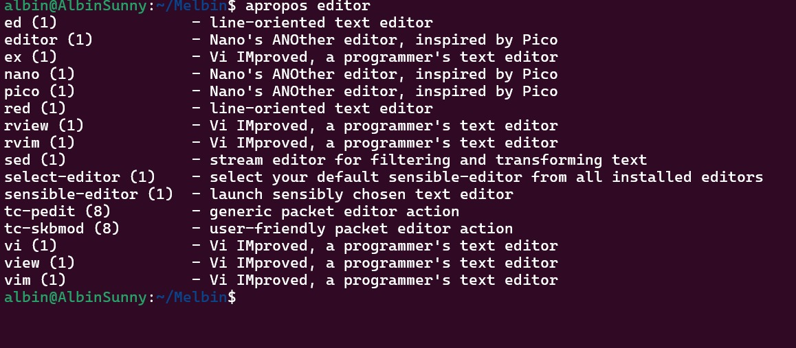
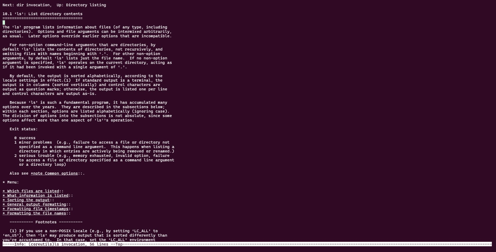
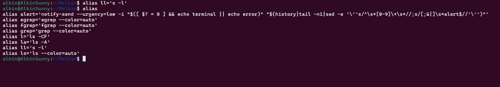
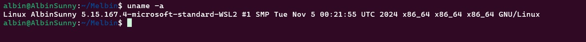
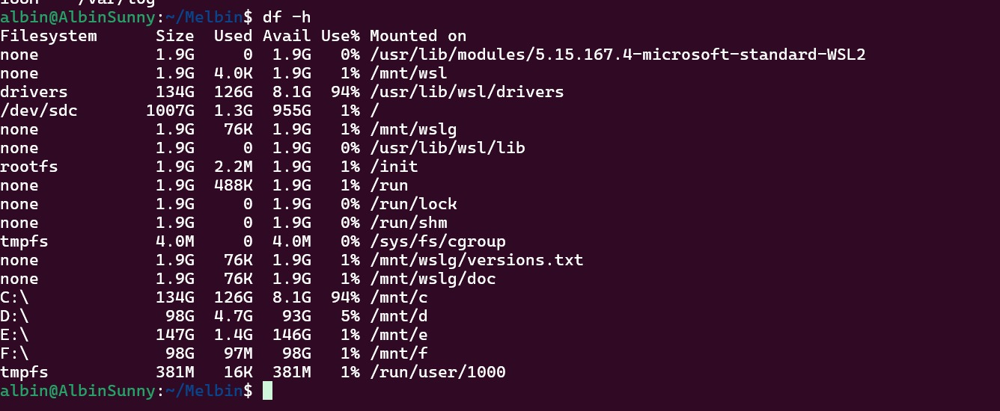
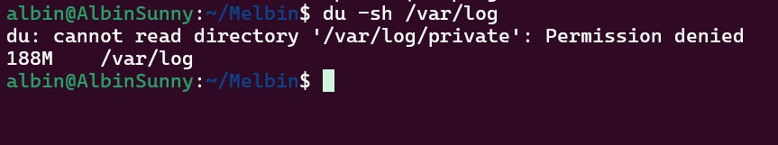
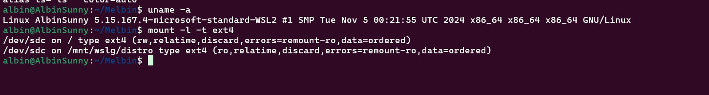
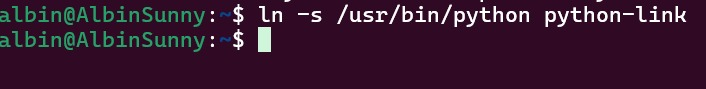
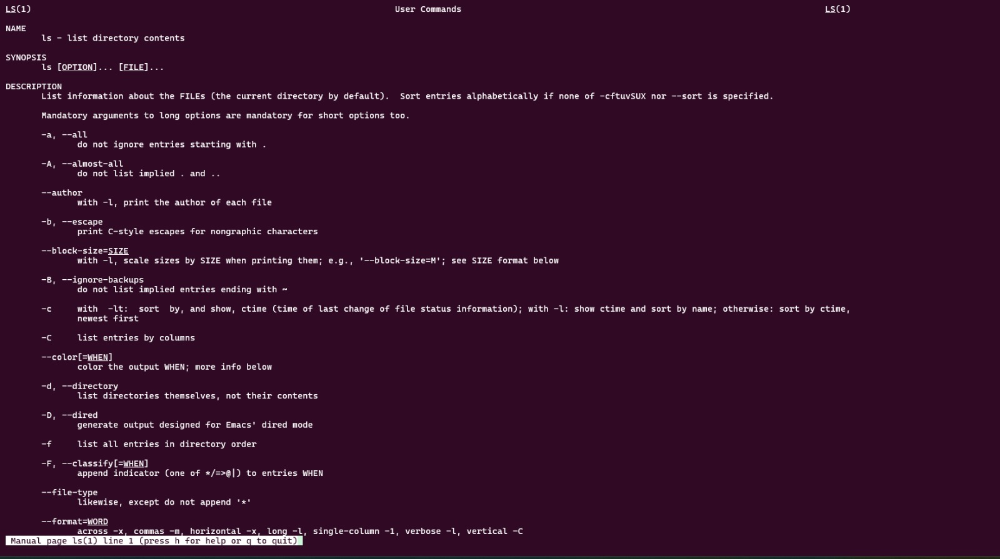

Help and Information
Linux is an open-source, Unix-like operating system initially created by Linus Torvalds in 1991. It was designed to be free, reliable, and highly customizable, with the goal of providing a powerful operating system that could be used by anyone without licensing restrictions. Unlike proprietary operating systems, Linux allows users to view, modify, and distribute the source code, which has led to its widespread use across various platforms, from personal desktops to mobile phones, and even supercomputers. Over time, Linux has gained significant popularity, especially in server environments, where its stability and scalability are crucial.
Lastly, Linux benefits from strong community support. Since it is open-source, users can access a wealth of resources, including online forums, documentation, and tutorials, to help troubleshoot problems or learn more about the system. The active Linux community fosters a collaborative environment where users can exchange ideas, offer assistance, and contribute to the ongoing development of the operating system. This sense of community makes Linux not only a reliable operating system but also an enjoyable and educational platform for both new and experienced users.
Purpose: Search the manual page database for a keyword.
Explanation:
Usage Example: apropos network
Purpose: View detailed and structured documentation of commands.
Usage Example: info ls
Explanation:
Usage Example: info ls
Purpose: Create shortcuts for commands.
Usage Example: alias ll='ls -l'
Explanation:
Usage Example: alias ll='ls -l'
Purpose: Displays system information such as the operating system, kernel, and machine type.
Explanation:
Usage Example: uname -r
Purpose: Display disk space usage.
Explanation:
Usage Example: df -h
Purpose: Display disk usage of files and directories.
Explanation:
Usage Example: du -sh /var/log
Purpose: Mount file systems or devices.
Explanation:
Usage Example: mount -l-t ext4
Purpose: Create hard and symbolic links to files.
Explanation:
Usage Example: ln -s /usr/bin/python python-link
Purpose: Display the manual pages for commands.
Explanation:
Usage Example: man ls